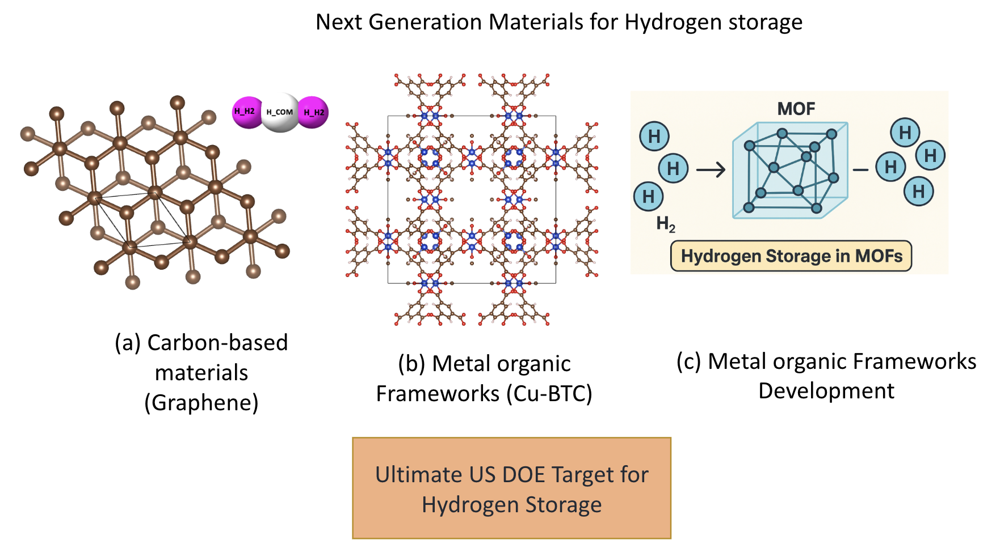
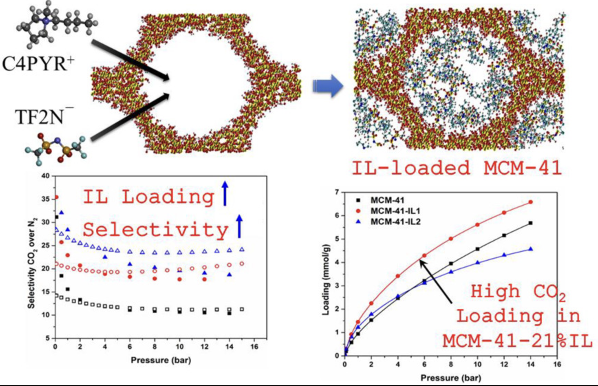
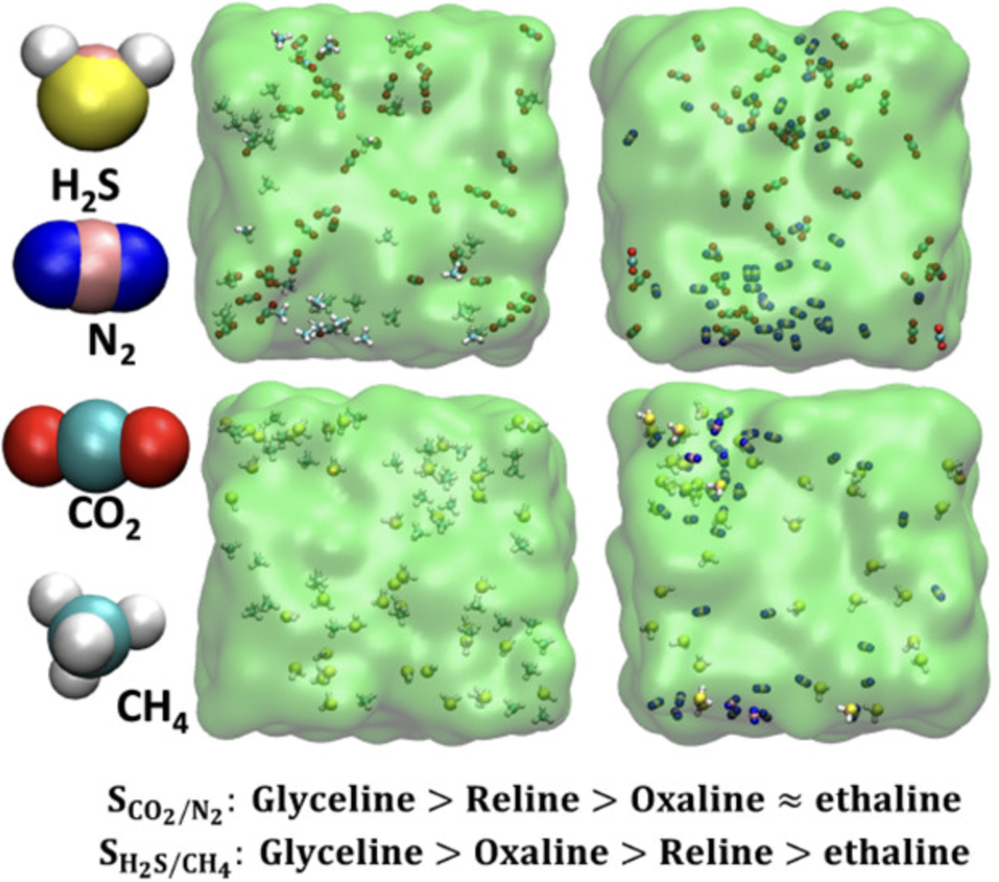

Mithilesh Prajapati
Past Affiliation: M.Tech (IIT BHU)
PhD Topic: Recovery of Valuable Metals from Spent Lithium-ion Batteries
Dr. Kishant Kumar has computational as well as experimental expertise. His expertise in computational technique includes Density Functional Theory, Molecular Dynamics, Monte Carlo Simulations and Machine Learning. In experimental section, ongoing research includes battery recycling, gas separation and storage studies using porous materials and different solvents.

Past Affiliation: M.Tech (IIT BHU)
PhD Topic: Recovery of Valuable Metals from Spent Lithium-ion Batteries

Past Affiliation: M.Tech (Jamia Milia Islamia, New Delhi)
PhD Topic: Next Generation Materials for Hydrogen Storage

Past Affiliation: M.Sc (CSJM University, Kanpur)
PhD Topic: Development of advanced nanomaterial-based drug delivery systems and computational analysis using molecular dynamics

Past Affiliation: M.Tech (IIT Guwahati)
PhD Topic: Hydrogen storage in Metal–Organic Frameworks (MOFs)

Past Affiliation: B.Tech (Guru Ghasida University, Chhattisgarh)
PhD Topic: Lithium-ion battery recycling

Present Affiliation: General Manager(ONGC, New Delhi)
PhD Topic: Gas Storage and Separation using Porous Materials
Our research group members involved in both experiment as well as computational investigations.
Currently, we are developing methodology to recover the valuable metals from spent lithium ion batteries (LIBs). The valuable elements such as Lithium and Cobalt present in the LIBs are recovered with a leaching efficiecy of almost 99%.

We are designing several MoFs to enhance the storage capcity of hydrogen gas for onboard applications as an alternate green fuel.
Gas separation using porous materials is crucial for producing high-purity gases, reducing energy consumption compared to conventional separation methods. These materials—such as MOFs, zeolites, and porous carbons—offer selective adsorption based on molecular size and affinity, enabling efficient separation of industrially important gases like CO₂, O₂, N₂, H₂, H₂S, SO₂ and CH₄.
Gas absorption using amine solvents is a well-established technique for capturing acidic gases like CO₂ and H₂S due to their high reactivity and selectivity. In contrast, alternative solvents such as ionic liquids (ILs) and deep eutectic solvents (DESs) offer tunable physicochemical properties, lower volatility, and improved thermal stability, making them promising for energy-efficient and environmentally friendly gas absorption processes.
Our research outputs include peer-reviewed journal articles, granted patents, and technologies transferred to industry partners.
In this section, visitors interested in research collaboration and JRF or PhD position are welcome to provide your input through the form